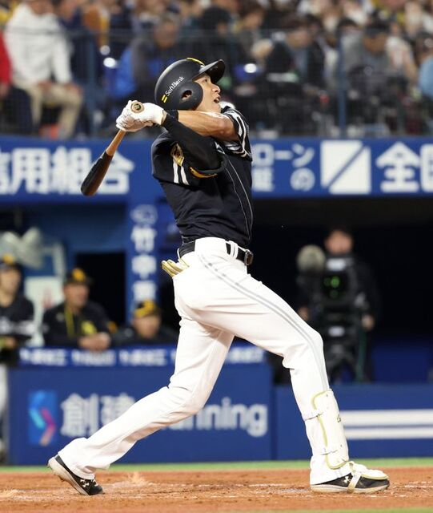
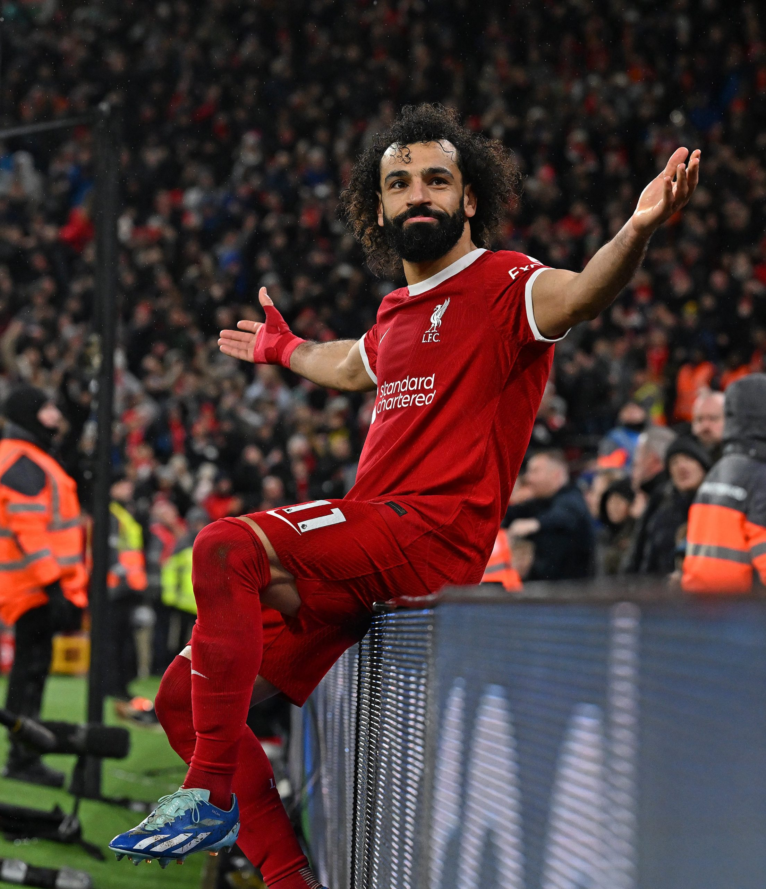
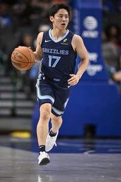
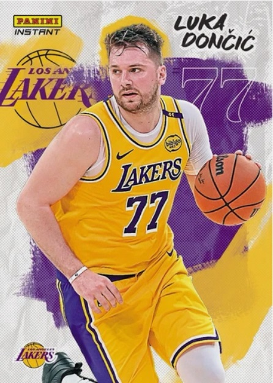
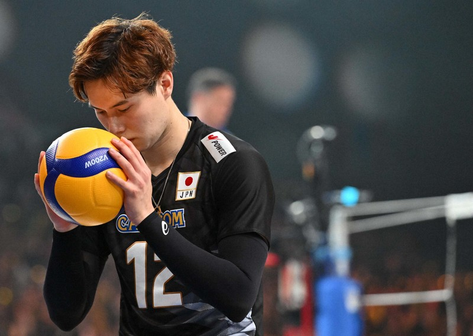

⚾好きなスポーツ選手⚽
好きな選手がたくさんいるなかでピックアップして紹介します！
| スポーツ | 選手名・チーム名 | 詳細 | 写真 |
|---|---|---|---|
| 野球 | 柳田悠岐（ソフトバンクホークス） | ポジション：外野手 投打：右投左打 ドラフト：2010年ドラフト2位 通算成績※現時点 試合：1461試合 安打：1605本 本塁打：266本 打点：896打点 打率：.302 2015年度、2020年度パ・リーグMVP。NPB史上初のトリプルスリーと首位打者の同時達成者。NPBにおける連続試合四球記録（18試合）保持者。 |  |
| 野球 | マイク・トラウト（ロサンゼルス・エンゼルス） | ポジション：外野手 投打：右投右打 通算成績※現時点 試合：1564試合 安打：1686本 本塁打：389本 打点：981点 打率：.297 MLB史上初めて1シーズンでの25本塁打、30盗塁、100四球を記録した。 シーズンMVP3回、同投票2位に4度選出されている現役最高の選手の一人。 | .jpg) |
| サッカー | モハメド・サラー（リヴァプール） | ポジション：FW 背番号：11 キャリア通算※現時点 出場：601試合 得点：288点 プレミアリーグにおける外国人最多得点記録保持者であり、UEFAチャンピオンズリーグにおけるアフリカ人最多得点記録保持者である。 抜群のスピード、巧みなボールコントロールを持ち合わせるストライカー |  |
| バスケットボール | 河村勇輝（メンフィス・グリズリーズ） | ポジション：ポイントガード 福岡第一高等学校では全国大会でタイトルを4回獲得し、ウィンターカップでは2連覇を達成しベストファイブにも選ばれた。 18歳でBリーグ三遠ネオフェニックスと特別指定選手として契約し、当時最年少記録だった。 メンフィス・グリズリーズとツーウェイ契約を結び日本人4人目のNBA選手となった。 Gリーグ(下部リーグ)オールスターゲームにはファン投票1位で選出された。 |  |
| バスケットボール | ルカ・ドンチッチ（ロサンゼルス・レイカーズ） | ポジション：ポイントカード、シューティングガード NBAデビュー：2018年 2024-2025スタッツ（レギュラーシーズン） 平均得点：28.2点 平均リバウンド：8.2本 平均アシスト：7.7本 3ポイント成功率：36.8% ドンチッチはPG、SG、SFでプレイすることの出来るポジションレスな選手であり、ガードとしては198cm、104kgと大柄な選手となる。 3ポイントシュート、ミドルシュートや、ポスト付近でのフローターなど、様々なシュートを決められるスキルを持っている。 |  |
| バレーボール | 高橋藍（サントリーサンバーズ大阪） | ポジション：アウトサイドヒッター 最高到達点：350㎝ 試合前に必ずすること：バナナを食べる 21世紀生まれの選手としては初めてバレーボール日本代表に選出された。2021年にはイタリアのチームに入団した。 |  |